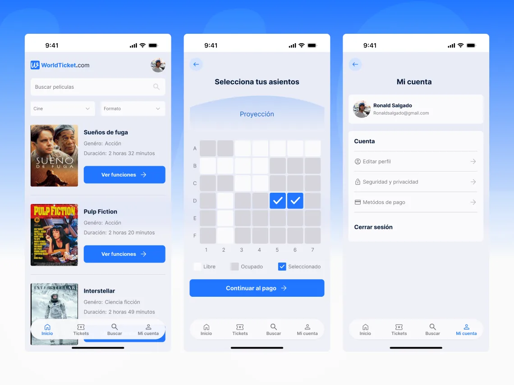
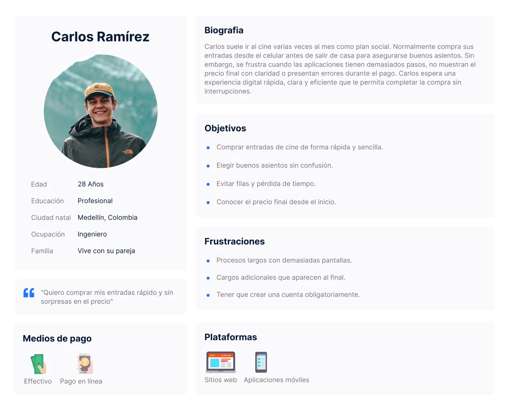
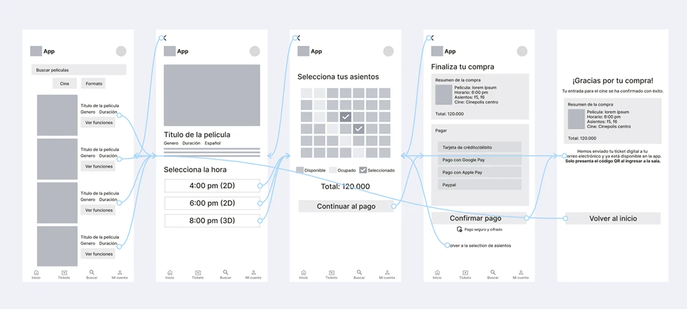
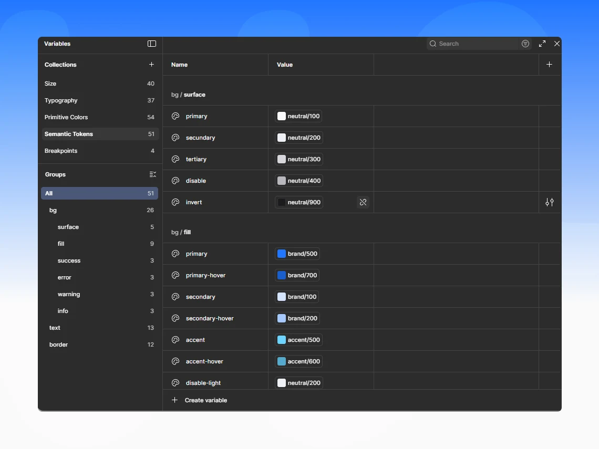
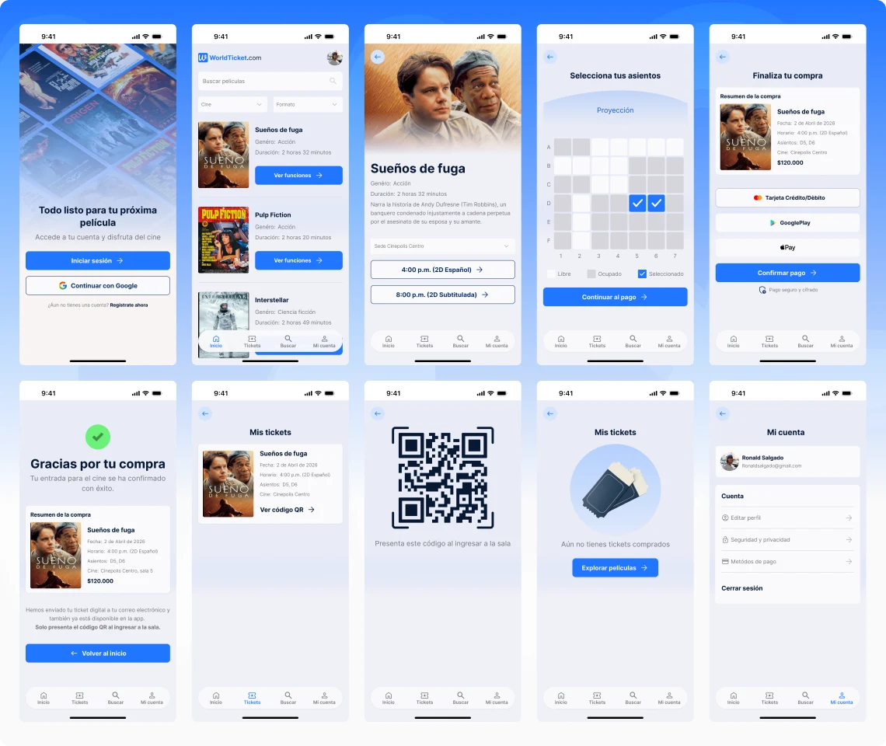

Diseño de la app WorldTicket para compra de entradas de cine

Acerca del proyecto
App móvil para comprar entradas de cine. Nació como ejercicio del Certificado Profesional de UX de Google, pero la desarrollé como un producto real.
• Tipo: Proyecto de producto (certificación UX de Google)
• Rol: Diseñador UX/UI · Ciclo completo, de la investigación al prototipo
• Reto: Hacer que comprar entradas desde el celular sea simple y confiable, sobre todo en la selección de asientos y el pago.
• Decisión clave: Agregar un resumen de compra antes del pago y reforzar la confirmación final, a partir de lo que mostraron las pruebas con usuarios.
• Entregable: App validada con dos rondas de pruebas de usabilidad, un sistema de diseño basado en tokens y un prototipo de alta fidelidad en Figma.
Paso 1: Investigación de usuarios
El proceso comenzó con entrevistas a usuarios, que permitieron identificar comportamientos, motivaciones y puntos de fricción al comprar entradas de cine en entornos digitales. A partir de estos hallazgos creé un user persona, con el objetivo de mantener al usuario real como referencia durante todo el diseño.

Paso 2: Creación de user journey
Después, desarrollé un user journey para visualizar el recorrido completo del usuario, identificar momentos de fricción y oportunidades de mejora antes de diseñar soluciones.

Paso 3: Arquitectura de la información
A partir de la investigación inicial, creé un sitemap, un userflow y wireframes de baja fidelidad. Luego los evalué mediante pruebas de usabilidad remotas por videollamada. Los resultados mostraron que los usuarios entendían fácilmente cómo iniciar la compra, pero presentaban fricción en la selección de asientos y el proceso de pago, además de necesitar mayor claridad antes y después de confirmar la compra. Con base en estos hallazgos, iteré los wireframes simplificando pasos, incorporando un resumen de compra previo al pago y reforzando la confirmación final. Validé estas mejoras en una segunda ronda de pruebas, confirmando un flujo más claro y confiable.

Paso 4: Sistema de diseño
Creé un sistema de diseño escalable para garantizar consistencia visual, claridad y accesibilidad en toda la aplicación. Lo construí con design tokens, lo que permitió centralizar colores, tipografía, espaciados y estilos de componentes, facilitando un handoff más eficiente con desarrollo y futuras iteraciones del producto. Este enfoque mantiene la coherencia en la experiencia y permite que el diseño crezca de manera ordenada.

Paso 5: Diseño UI y prototipo de alta fidelidad
Con base en los wireframes iterados y el sistema de diseño, diseñé un prototipo de alta fidelidad enfocado en el flujo principal de compra de entradas. El prototipo prioriza la claridad visual, la reducción de fricción en el proceso de pago y una confirmación final clara para reforzar la confianza del usuario. Con este prototipo validé la experiencia completa de principio a fin.

Impacto: un flujo de compra validado con usuarios
Más que un ejercicio académico, WorldTicket demuestra cómo la investigación y las pruebas con usuarios convierten un flujo con fricción en una experiencia de compra confiable:
• Fricción detectada y resuelta: La primera ronda de pruebas reveló problemas en la selección de asientos y el pago; la segunda confirmó que el flujo iterado era más claro y confiable.
• Proceso UX de principio a fin: Investigación, user journey, arquitectura, sistema de diseño y prototipo, aplicados con el rigor de un producto real.
• Una base lista para escalar: El sistema de tokens permite sumar nuevas funciones, como promociones o programas de fidelización, sin perder coherencia visual.